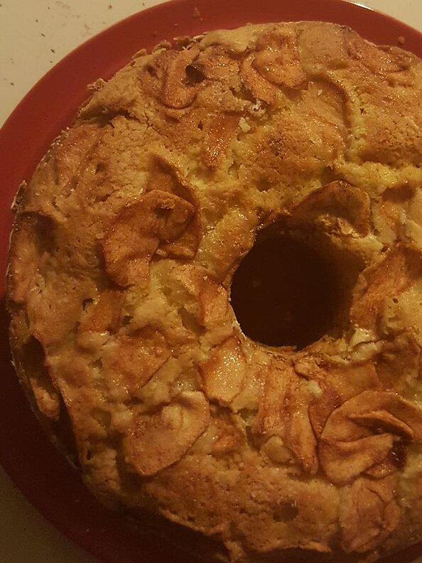

Jewish apple cake

Description
A delicious cake filled and topped with apples and cinnamon.
Ingredients
- 3 cups all-purpose flour
- ½ teaspoon salt
- 2 ½ teaspoons baking powder
- 2 cups white sugar
- 1 cup vegetable oil
- 4 eggs, beaten
- ¼ cup orange juice
- 2 teaspoons vanilla extract
- 3 apples - peeled, cored and sliced
- 2 teaspoons ground cinnamon
- 5 teaspoons white sugar
Steps
- Preheat oven to 350 degrees F (175 degrees C). Grease and flour one 10 inch tube pan. Combine the ground cinnamon and 5 teaspoons of the sugar together and set aside.
- In a large mixing bowl, combine the flour, salt, baking powder and 2 cups of the sugar. Stir in the vegetable oil, beaten eggs, orange juice and vanilla. Mix well.
- Pour 1/2 of the batter into the prepared pan. Top with 1/2 of the sliced apples and sprinkle with 1/2 of the cinnamon sugar mixture. Pour the remaining batter over the top and layer the remaining sliced apples and cinnamon sugar.
- Pour 1/2 of the batter into the prepared pan. Top with 1/2 of the sliced apples and sprinkle with 1/2 of the cinnamon sugar mixture. Pour the remaining batter over the top and layer the remaining sliced apples and cinnamon sugar.